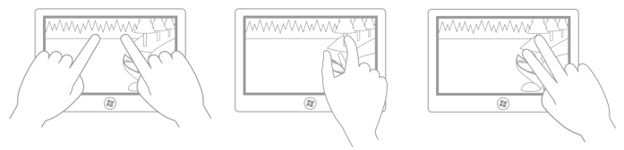
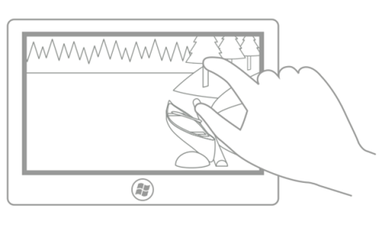
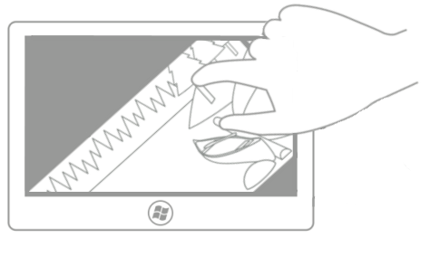
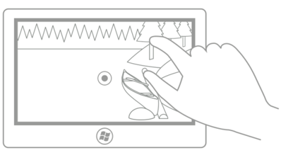
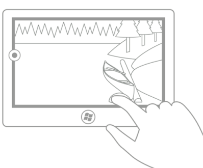

Rotation
This article describes the new Windows UI for rotation and provides user experience guidelines that should be considered when using this new interaction mechanism in your Windows app.
Important APIs: Windows.UI.Input, Windows.UI.Xaml.Input
Dos and don'ts
- Use rotation to help users directly rotate UI elements.
Additional usage guidance
Overview of rotation
Rotation is the touch-optimized technique used by Windows apps to enable users to turn an object in a circular direction (clockwise or counter-clockwise).
Depending on the input device, the rotation interaction is performed using:
- A mouse or active pen/stylus to move the rotation gripper of a selected object.
- Touch or passive pen/stylus to turn the object in the desired direction using the rotate gesture.
When to use rotation
Use rotation to help users directly rotate UI elements. The following diagrams show some of the supported finger positions for the rotation interaction.

Note Intuitively, and in most cases, the rotation point is one of the two touch points unless the user can specify a rotation point unrelated to the contact points (for example, in a drawing or layout application). The following images demonstrate how the user experience can be degraded if the rotation point is not constrained in this way.
This first picture shows the initial (thumb) and secondary (index finger) touch points: the index finger is touching a tree and the thumb is touching a log.

In this second picture, rotation is performed around the initial (thumb) touch point. After the rotation, the index finger is still touching the tree trunk and the thumb is still touching the log (the rotation point).
In this third picture, the center of rotation has been defined by the application (or set by the user) to be the center point of the picture. After the rotation, because the picture did not rotate around one of the fingers, the illusion of direct manipulation is broken (unless the user has chosen this setting).
In this last picture, the center of rotation has been defined by the application (or set by the user) to be a point in the middle of the left edge of the picture. Again, unless the user has chosen this setting, the illusion of direct manipulation is broken in this case.
Windows 10 supports three types of rotation: free, constrained, and combined.
| Type | Description |
|---|---|
| Free rotation | Free rotation enables a user to rotate content freely anywhere in a 360 degree arc. When the user releases the object, the object remains in the chosen position. Free rotation is useful for drawing and layout applications such as Microsoft PowerPoint, Word, Visio, and Paint; and Adobe Photoshop, Illustrator, and Flash. |
| Constrained rotation | Constrained rotation supports free rotation during the manipulation but enforces snap points at 90 degree increments (0, 90, 180, and 270) upon release. When the user releases the object, the object automatically rotates to the nearest snap point. Constrained rotation is the most common method of rotation, and it functions in a similar way to scrolling content. Snap points let a user be imprecise and still achieve their goal. Constrained rotation is useful for applications such as web browsers and photo albums. |
| Combined rotation | Combined rotation supports free rotation with zones (similar to rails in Guidelines for panning) at each of the 90 degree snap points enforced by constrained rotation. If the user releases the object outside of one of 90 degree zones, the object remains in that position; otherwise, the object automatically rotates to a snap point.
Note A user interface rail is a feature in which an area around a target constrains movement towards some specific value or location to influence its selection.
|
Related topics
Samples
Archive samples
- Input: XAML user input events sample
- Input: Device capabilities sample
- Input: Touch hit testing sample
- XAML scrolling, panning, and zooming sample
- Input: Simplified ink sample
- Input: Gestures and manipulations with GestureRecognizer
- Input: Manipulations and gestures sample
- DirectX touch input sample